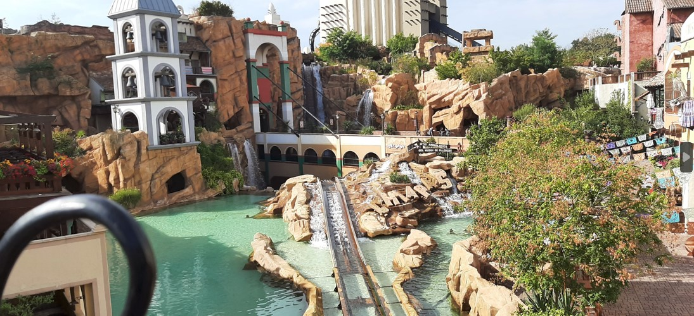

Interesses
In mijn vrije tijd heb ik veel hobby's en interesses! Hieronder zie je een aantal voorbeelden!
Pretparken
Prachtige thematisering, epische muziek, en spannende attracties...
In een pretpark voel ik mij altijd thuis. Ik ben steeds op zoek naar de meest intense en engste attracties.
Mijn favoriete pretpark is Phantasialand, waar ze op een redelijk kleine oppervlakte meerdere prachtige themagebieden hebben gebouwd.
